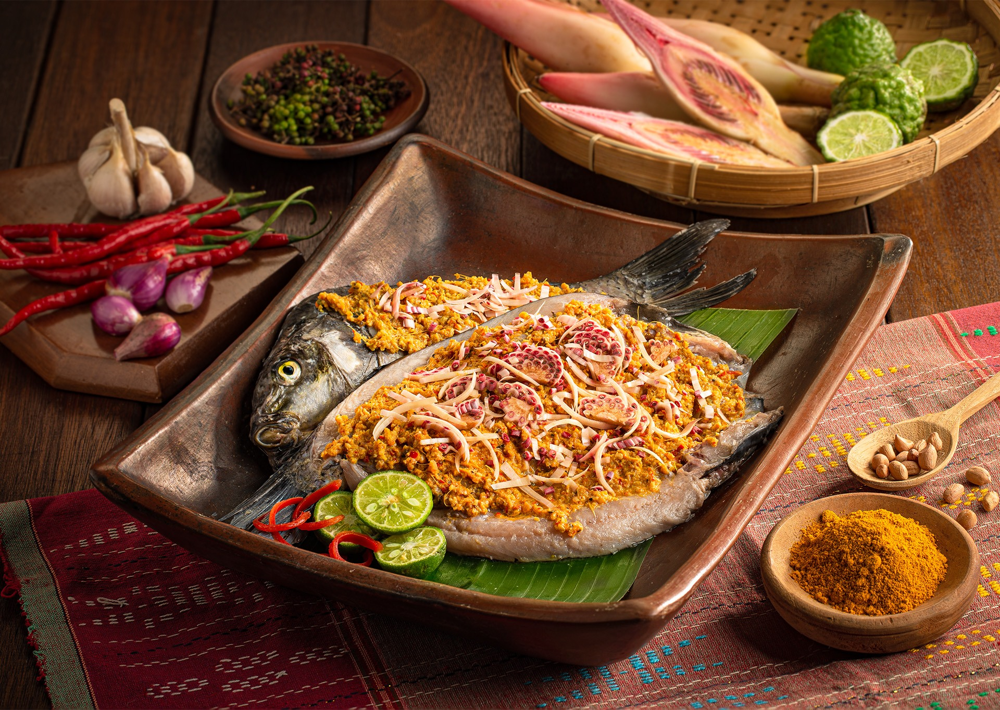

KULINER SUMATERA UTARA
Kekayaan Cita Rasa Nusantara
Sumatera Utara memiliki beragam kuliner khas yang mencerminkan kekayaan budaya dan sejarahnya. Makanan tradisional Sumatera Utara dikenal dengan cita rasa yang kuat, pedas, serta penggunaan rempah-rempah khas seperti andaliman dan asam gelugur. Pengaruh budaya Batak, Melayu, Tionghoa, dan India turut memperkaya khazanah kuliner di provinsi ini.
Andaliman: Rempah Ajaib dari Sumatera Utara
Andaliman (Zanthoxylum acanthopodium) adalah rempah khas Sumatera Utara yang memberikan sensasi getir dan sedikit mati rasa pada lidah. Rempah ini mirip dengan Sichuan pepper dari Tiongkok dan hanya tumbuh di dataran tinggi Sumatera Utara. Andaliman menjadi bumbu wajib dalam masakan tradisional Batak seperti Arsik dan Saksang, memberikan aroma citrus yang khas dan sensasi menggetarkan di lidah.
Hidangan Tradisional
Saksang
Saksang adalah hidangan daging babi atau anjing (pada masa lalu) yang dimasak dengan darah segar dan berbagai rempah seperti andaliman, cabai, bawang, serai, dan asam. Hidangan ini biasanya disajikan dalam upacara adat Batak. Meski terdengar eksotis, Saksang memiliki citarasa yang kaya dan kompleks, mencerminkan keberanian masyarakat Batak dalam mengolah bahan makanan.
Arsik
Arsik adalah hidangan ikan mas yang dimasak dengan bumbu kuning kaya rempah dan andaliman. Ikan dimasak hingga kuahnya mengental dan meresap sempurna ke dalam daging ikan. Hidangan ini memiliki citarasa gurih, asam, dan pedas yang seimbang. Arsik biasanya disajikan pada acara adat dan pertemuan keluarga penting. Ikan yang digunakan harus segar dan dimasak dengan api kecil agar bumbu meresap dengan sempurna.
Babi Panggang Karo
Babi Panggang Karo (BPK) adalah hidangan daging babi yang dipanggang dengan bumbu khas suku Karo. Daging yang telah dibumbui dipanggang hingga kecokelatan, kemudian diiris tipis dan disajikan dengan kuah saus andaliman yang pedas, sayur daun ubi, dan nasi. BPK menjadi salah satu kuliner paling populer dari Tanah Karo dan banyak diburu wisatawan yang berkunjung ke Sumatera Utara.
Mie Gomak
Mie Gomak adalah mi tradisional Batak Toba yang dibuat dari tepung terigu dan diolah dengan bumbu khas seperti andaliman, kemiri, bawang, dan cabai. Mi ini memiliki tekstur kenyal dan disajikan dengan kuah kental berbumbu yang gurih dan pedas. Mie Gomak sering disajikan dengan tambahan sayuran, irisan telur, dan potongan ayam atau daging lainnya.
Soto Medan
Soto Medan adalah varian soto yang memiliki kuah santan berwarna kuning dengan aroma rempah yang kuat. Berbeda dengan soto dari daerah lain, Soto Medan memiliki ciri khas berupa tambahan perkedel kentang, emping, dan kerupuk udang sebagai pelengkap. Hidangan ini mencerminkan pengaruh budaya Melayu dan Jawa dalam kuliner Sumatera Utara. Soto Medan biasanya disajikan dengan nasi atau lontong.
Peta Kuliner Sumatera Utara
- Medan: Soto Medan, Laksa, Bihun Bebek, Mie Pangsit
- Tanah Karo: Babi Panggang Karo, Tasak Telu, Cimpa
- Toba: Arsik, Naniura, Dengke Mas na Niura
- Simalungun: Incah, Itak Gurgur
- Mandailing: Arsik Mandailing, Gulai Ikan Sale
- Pakpak: Pelleng, Mi Gomak
- Nias: Gowi Dano-dano, Nami Pulu
- Asahan: Masak Putih, Rendang Ayam
- Tapanuli: Saksang, Manuk Napinadar
- Padang Sidempuan: Sambal Tuktuk, Ikan Arsik Bakar
Sajian Penutup
Kuliner Sumatera Utara juga memiliki beragam kudapan dan pencuci mulut tradisional. Ombus-ombus adalah kue tradisional Batak berisi gula aren yang dibungkus daun pisang dan dikukus. Cipera merupakan kue dari tepung beras yang dimasak dengan gula aren. Tidak ketinggalan, Bika Ambon yang sebenarnya berasal dari Medan (meski namanya mengacu pada Ambon) telah menjadi oleh-oleh populer dari Sumatera Utara.
Tradisi Makan
Masyarakat Sumatera Utara, terutama suku Batak, memiliki tradisi makan bersama yang disebut "Mangan Singolngolan" di mana anggota keluarga atau komunitas berkumpul mengelilingi hidangan yang disajikan. Tradisi ini mencerminkan nilai kebersamaan dan kekeluargaan yang dijunjung tinggi. Dalam acara adat, makanan disajikan sesuai dengan status sosial dan peran dalam upacara.
Kuliner Modern
Seiring perkembangan zaman, kuliner Sumatera Utara mengalami inovasi dan fusi dengan masakan modern. Di kota-kota besar seperti Medan, kini banyak dijumpai restoran dan kafe yang menyajikan makanan tradisional dengan presentasi modern atau menggabungkan teknik masak kontemporer. Meski demikian, cita rasa autentik dan penggunaan rempah tradisional tetap dipertahankan sebagai identitas kuliner Sumatera Utara.